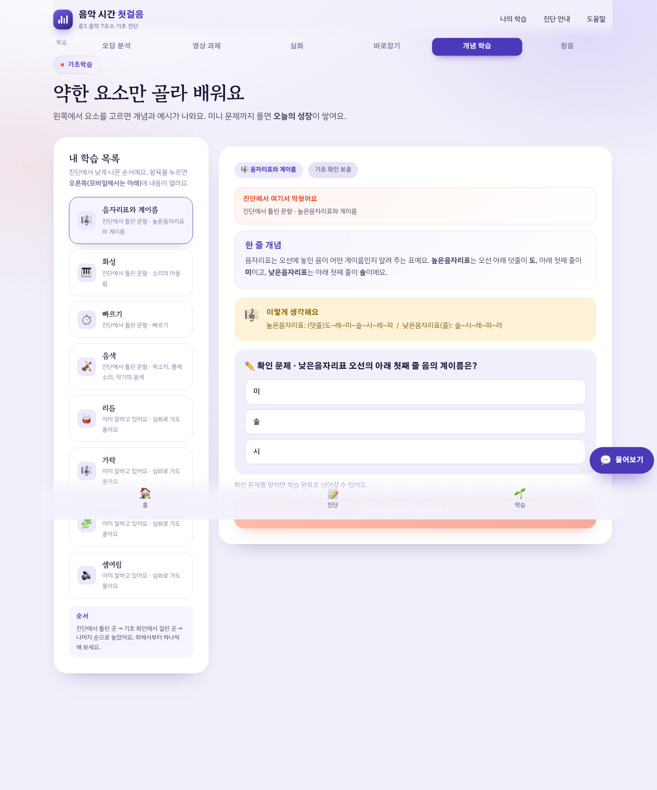
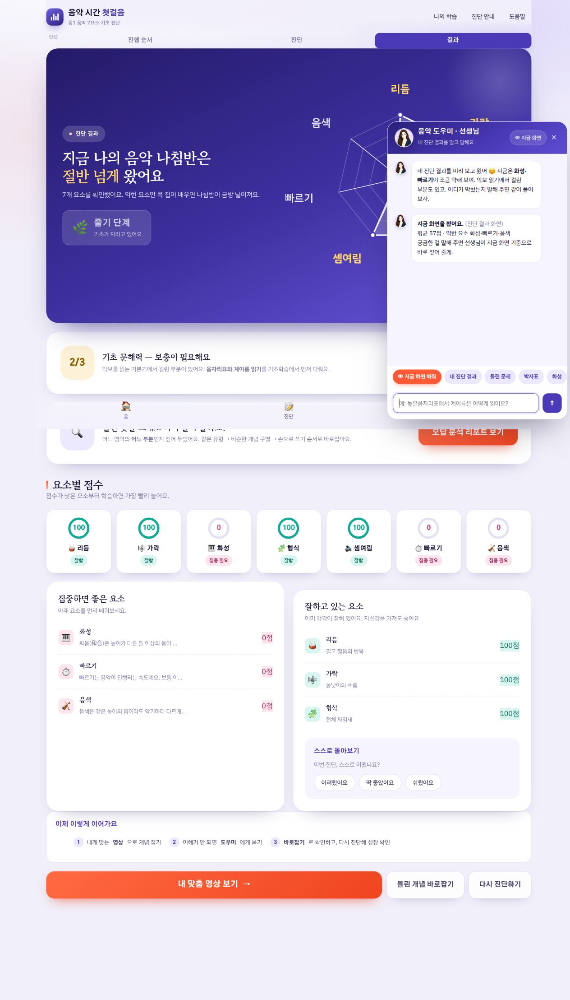

틀리면 거기서 멈추고 — 세 번 다시 붙잡습니다
진단으로 끝내지 않습니다 — 같은 자리에서 다른 방식으로 다시 묻고, 손으로 쓰게 합니다.


실제 챗 화면 — 진단·답안·질문을 함께 읽음
막힌 자리에 그대로 멈춰 다시 묻습니다 — 다음 화면으로 넘기지 않습니다.
'리듬'과 '빠르기', '약박'과 '셈여림'처럼 헷갈리는 쌍을 나란히 물어 구분하게 합니다.
그리기 · 채우기 등 단답형 — 보기는 주지 않고, 자기 손으로 답을 적게 합니다.
'지금 화면 봐줘' · '왜 틀렸어요?' · '다시 설명' — 세 가지 요청을 그 자리에서 받습니다